Su navegador
no admite las funciones requeridas por impress.js, por lo que se le presenta una
versión simplificada de esta
presentación.
Para la mejor experiencia por favor use la última version de
Chrome ,
Safari o
Firefox .
La Odisea Tecnológica
Ciencia, tecnologia, informacion y datos
Informatica
Información Automática
Ciencia que estudia métodos(técnicas) para almacenar, procesar y transmitir información y
datos
Sistematización
racional de la información
Herramientas


Conocimientos obtenidos mediante la observación y el razonamiento de los que se deducen
principios y leyes.
Tecnología
Conocimiento de los oficios
Permite diseñar herramientas y máquinas para controlar el ambiente
Elementos simples, que al ser relacionados, adquieren un sentido
Reduce la incertidumbre entre varias alternativas posibles.
Campos de aplicación de la tecnología
Educación

Dispositivo electrónico que procesa datos, de acuerdo con una serie de
instrucciones almacenadas
Construidas:
Circuitos de tubos de vacío
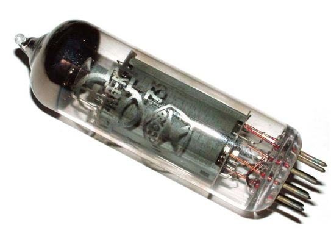
Comunicación Humano/Maquina:
Lenguaje de máquina (lenguaje binario)
Construidas:
Circuitos de transistores
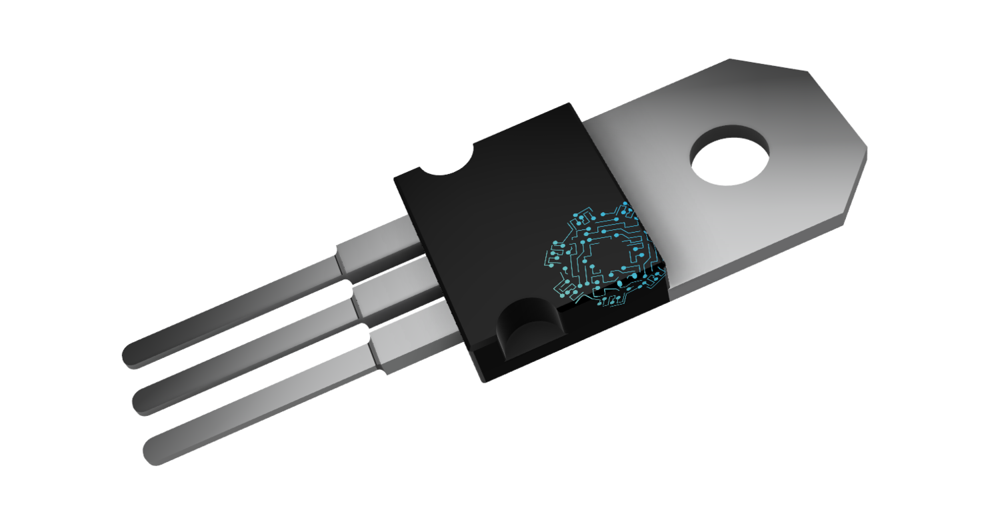
Comunicación Humano/Maquina:
Lenguajes de alto nivel
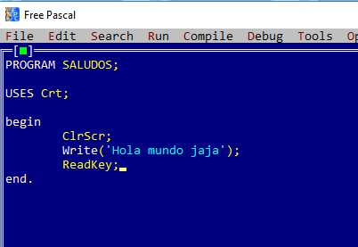
Construidas:
En circuitos integrados
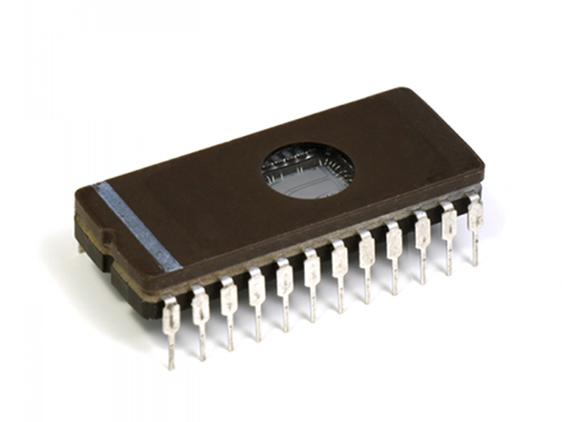
Comunicación Humano/Maquina:
Lenguajes de control
Construidas:
Con microprocesadores
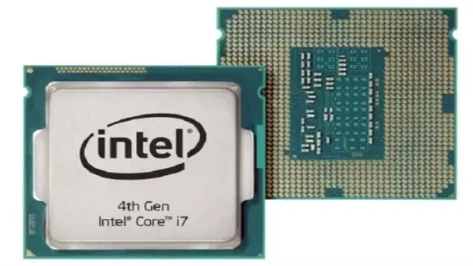
Memoria de chips de silicio.
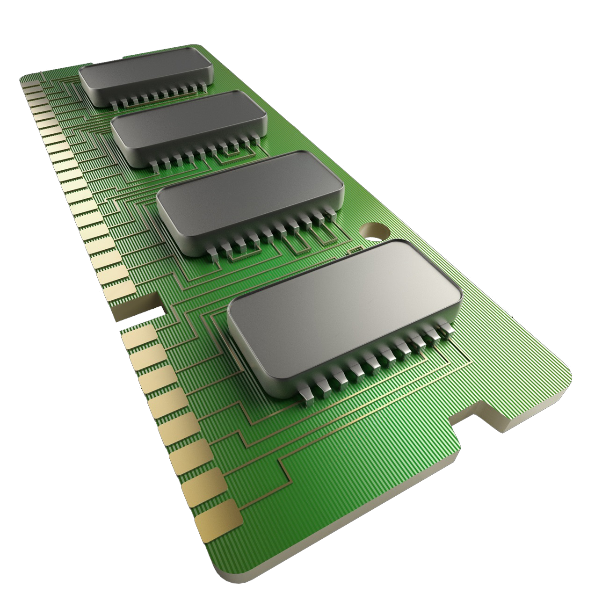
Construidas:
Con microprocesadores en paralelo
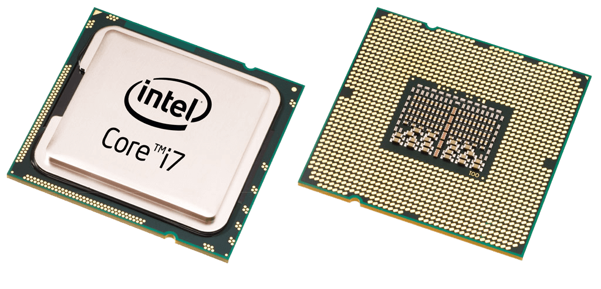
Comunicación Humano/Maquina:
Manejo de lenguaje natural y sistemas de inteligencia artificial
Hardware
Dispositivos electrónicos interconectados
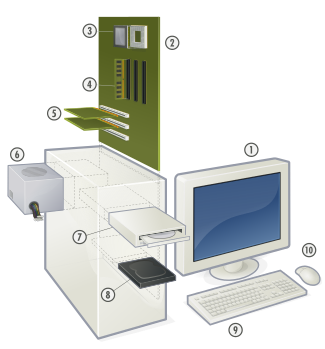
Software
Instrucciones electrónicas que le dicen al hardware qué debe hacer
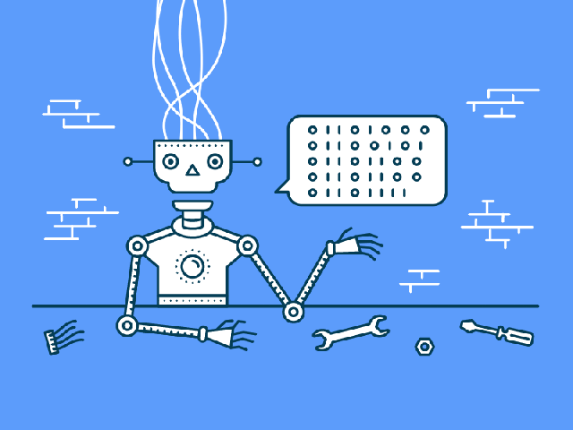
Unidad central de procesamiento (CPU)
-
Organiza y lleva a cabo todas las instrucciones
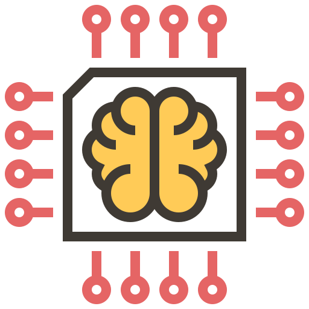
Memoria principal
-
Espacio que necesita la CPU para guardar programas y los datos que manipulan
-
RAM - Volatil
-
ROM - Permanente
Memoria secundaria
-
Almacenamiento masivo
-
- Magnética
-
- Óptica
-
- Magneto-óptica
-
- Estado sólido o memoria Flash
Dispositivos de entrada
-
Permiten ingresar información al sistema informático
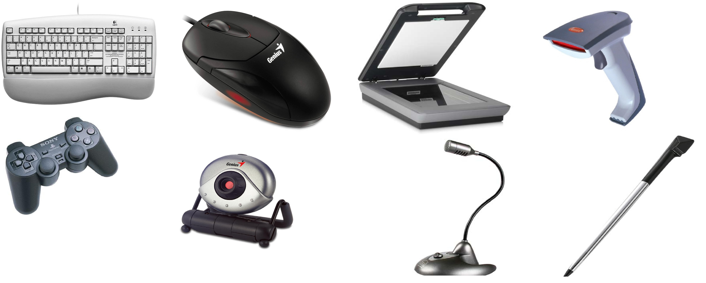
Dispositivos de salida
-
Permiten la extracción o recuperación de información
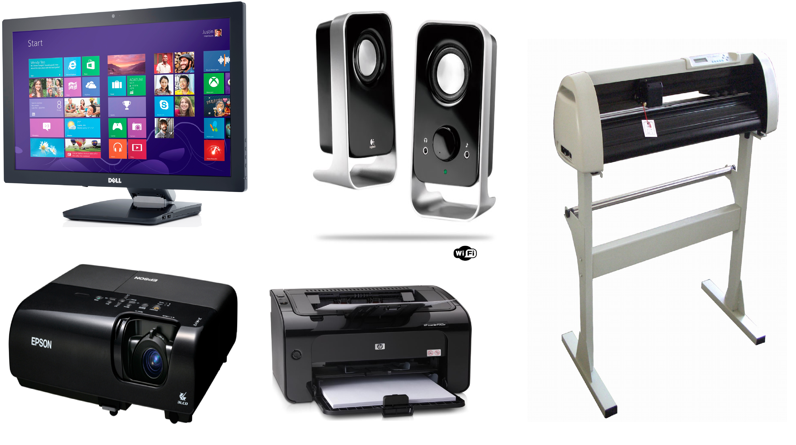
Sistema operativo
-
Es el programa de control maestro de la computadora
Son diseñados con muchos objetivos en mente:
-
- Multitareas
-
- Multiusuarios
-
- Multiprocesos
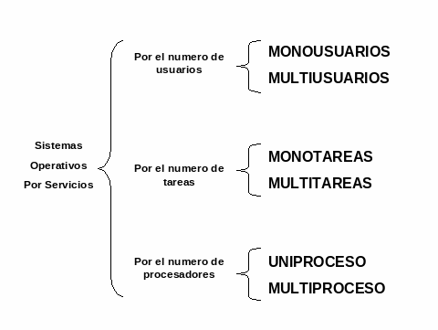
Software de desarrollo
-
Da instrucciones a un programa de computadora
-
- Léxico: símbolos
-
- Sintaxis: reglas
-
- Semántica: significado
Software de aplicación
-
Son las aplicaciones básicas que todo usuario debe de conocer
-
Procesador de textos
-
Hoja de cálculo
-
Programa de presentaciones
-
Navegador de Internet
-
Correo electrónico
Representación interna de datos
Binario
Todos los datos deben ser reducidos a interruptores eléctricos
Bits
- Unidad de datos más pequeña posible
- La siguiente unidad mayor de datos es el byte, el cual es un grupo de 8 bits
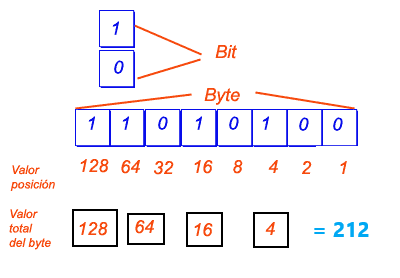
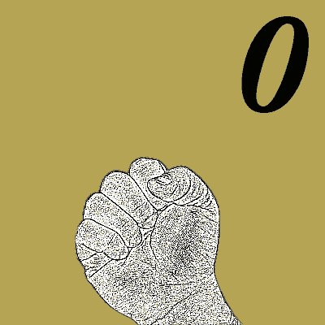
Unidades de mediciòn
- Bit
- Byte - 8 bits
- Kilobyte - 1024 bytes
- Megabyte - 1024 kilobytes
- Gigabyte - 1024 megabytes
- Terabyte - 1024 gigabytes
- Petabyte - 1024 terabytes
- Exabyte - 1024 petabytes